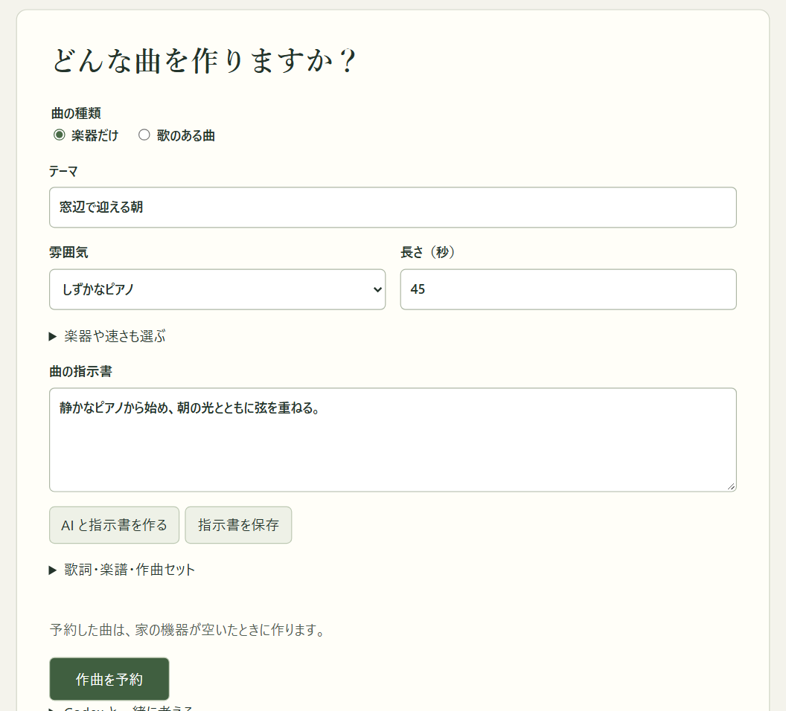
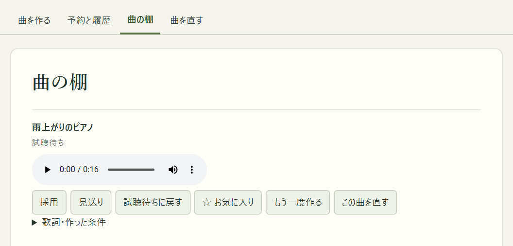

音のアトリエ 操作ガイド
初回の接続から、予約した曲を聴いて気になる部分を直すところまで、実際の画面に沿って進めます。画像を選ぶと原寸で表示できます。
1. 接続ファイルを読み込む
- 利用端末で Atelier を起動し、ブラウザで http://localhost:39395/ を開きます。
- 「接続ファイルを読み込む」を押し、GPU 機の API が作成した connection.json を選びます。ファイルには利用トークンが入っています。
- サーバー名が「接続中」になるのを待ちます。別のファイルを追加すると接続先を切り替えられます。

2. テーマを決めて作曲を予約する
- 「曲を作る」で「楽器だけ」または「歌のある曲」を選び、テーマ、雰囲気、長さを入力します。
- 歌詞欄には歌う行だけを記入します。「ピアノで始める」などの演奏指示は「曲の指示書」に書きます。
- 「作曲を予約」を押します。音源を作るのは、予約を引き受けた機器が空いたときです。

3. 予約の順番と進み具合を見る
- 「予約と履歴」で対象のタイトルを探します。「順番待ち」の間は、その機器での順番を確認できます。
- 「作っています」になると、担当の機器や進み具合が表示されます。必要な場合は「取り消す」で中止できます。
- 「できました」になったら「試聴する」を選びます。歌の場合は、歌詞との照合結果や聞き直したい箇所も確認します。

4. 曲の棚で試聴・採用する
- 「曲の棚」で再生ボタンを押して聴きます。
- 使う曲は「採用」、あとで探しやすくしたい曲は「お気に入り」にします。「歌詞・作った条件」で歌詞や実際の長さを確認できます。
- 「この曲を直す」で編集画面へ進みます。「もう一度作る」は同じ条件で別の予約を作ります。

5. 波形で区間を選んで直す
- 「切り取り・音の出入り」では、波形をタップして再生位置を決め、ドラッグで範囲を選びます。開始・終了の秒数を直接入力することもできます。
- 「選んだ範囲を聴く」で境界を確認します。「選択範囲を拡大」や「範囲を繰り返す」で細かく調整できます。一定テンポなら「小節に合わせる」を開きます。
- 部分差し替えは「一部分を別の曲に差し替える」を選び、差し替え元の曲と開始秒を指定します。「修正を予約」で新しいトラックを作ります。

素材・歌の読み・Codex を使う
- 「歌詞・楽譜・作曲セット」から prompt.md、lyrics.txt、score.abc、composition.json、ZIP を読み込み・保存できます。
- 生成済みの generation.json を読み込んで「元テイクを再現」を選ぶと、最終引数で生成し、元の WAV と SHA-256 を照合します。
- 読み誤りには「ことばの読みを直す」で「市場 → しじょう」のように指定します。複数の曲を連結するときは「曲をつなぐ・重ねる」で各曲の音量とクロスフェード秒数を設定します。
- 「AI と指示書を作る」または「Codex と一緒に考える」で、現在の下書きを共有できます。依頼文を Codex に渡し、届いた提案を画面で確認・適用してください。